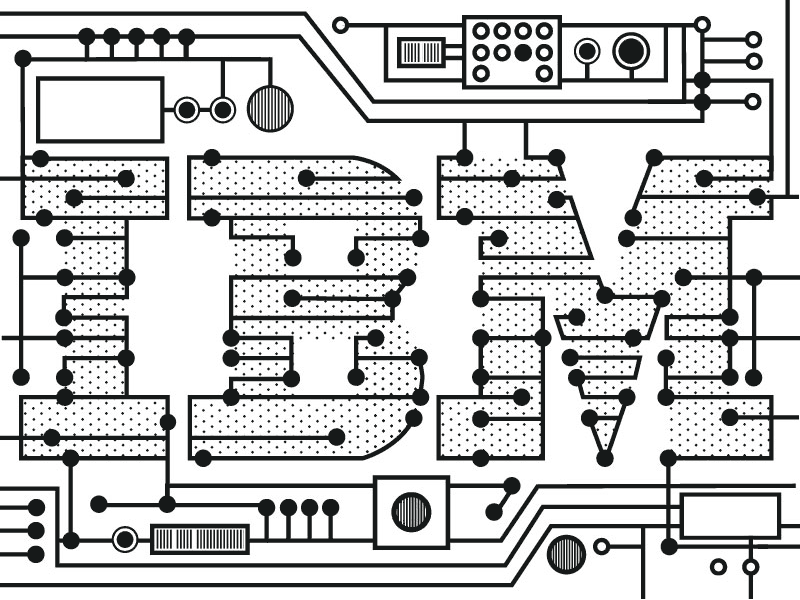
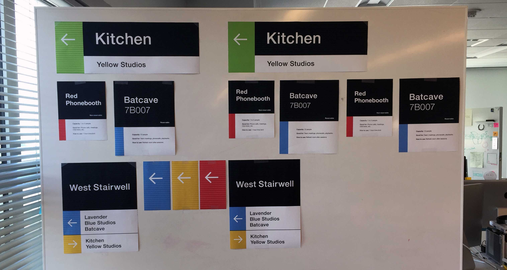
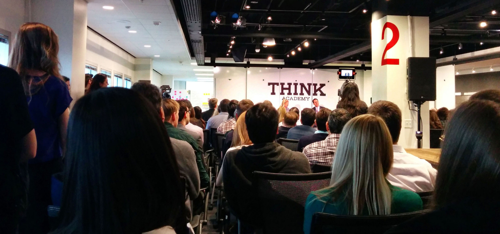
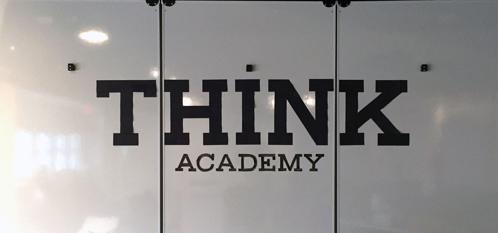
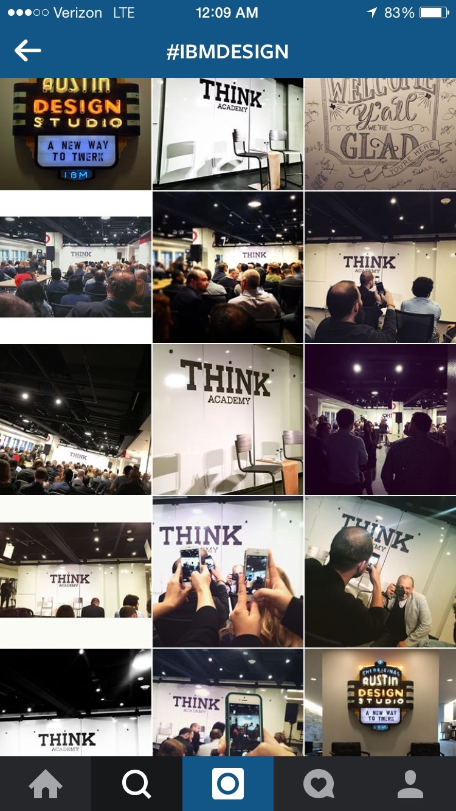
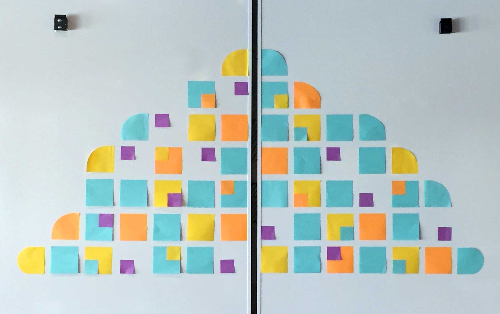

Role
In addition to my work on the practices content, I participated and led projects to contribute to the IBM Austin Studio culture and greater IBM Design initiative.
Intent
The goal of these projects was to maintain, encourage and scale a culture of design across all IBM corporate campuses, studios and offices around the world.
Over the past four years, IBM has successfully hired and acquired over a 1,000 designers, with a goal to reach 2,000 this year. The goal of this initiative is to bring design thinking and user-centered design into the core of all IBM products, teams and IBMers. With so many designers, and over 400,000 IBMers world wide, this initiative has many challenges, the most significant being scale.
IBM Austin Studios Wayfinding Update
The studio houses close to 300 designers, and hosts multiple workshops and visitors daily. As IBM Studios Austin office expanded in both space and employees, there was a need to improve the wayfinding system.
Final Design
To unify the two floors and improve studioer's orienteering, the wayfinding system took advantage of already established landmarks (kitchens and stairwells) and regions (colored regions of the floors and well-known meeting spaces) of the studio. Nodes, or locations where wayfinding decisions were made, were identified throughout the two floors and were used to layout the signage needs and system.

The largest signs function as directional wayfinding, cirulating users throughout the inner round of the office. The medium signs are located inside the stairwells in the and mounted beside the door, providing users with the nearby regions, meeting rooms and their numbers. The smallest sign works in tandem with the ADA signage already installed the office to identify meeting rooms and regions. Together, they build a system of association between color and location, encouraging mastery and providing identity and place to previously unnamed spaces in the office.
This wayfinding system has currently been adopted in offices on the Austin corporate campus. Installation on IBM Design floors is expected to be completed in 2016.
Process
74% of staff surveyed had difficulty orienting themselves, and individuals tended to self-identify as unconfident for the first year to year and a half.
The studio was difficult to navigate because of its layout, similar design aesthetic and frequent shuffling of team spaces and locations. Ultimately, it lacked imageability. Typically, a user becomes more familiar with a space over time, and through multiple experiences or exposures is able to develop an image or mental model of their environment. With two floors (designed and opened at separate times), identical hallways, meeting spaces and layouts, mastering the floors was not an easy task or intuitive. The second problem revolved around inconsistencies. Naming and numbering conventions for meeting rooms and collaborative spaces, as well as inconsistent inclusivity, weakened users' ability to navigate.
Visual Design
The look and feel progressed through three iterations, exploring a spectrum between sophisticated and polished and playful and charming. Red, Blue, Green and Yellow were chosen to echo the already established regions on the 7th floor. The illustrations were inspired by both IBM heritage, the naming and design aesthetics of the floor and the illustration work practiced around the office.

Prototype
Signs and directions were printed and pasted throughout the studio to encourage feedback and gain better insight into what was successful and what needed to be reconsidered. Check out my prototype post to see and read a more about it.

IBM Studios Austin: Guide to Everything
It became clear to the Practices Team over time that there was a need for more comprehensive on-boarding, to answer questions about IBM Design, the office, and the culture, values and expectations of studioers. Utilizing design thinking, my team and I worked to identify a range of possible responses. We chose an analog, personable experienced, and developed the concept, content, look and feel, with a final book to be delivered to new hires before their start dates. This edition was made specifically for the Austin Studio; however, in the future, the goal is for each studio to customize and produce their own for their studioer population.
At this time I do not have photos of the final book to share. If you would like to take a closer look at the Guide, please contact me.
Event Installations
IBM Studios Austin is the headquarters and birthplace of the IBM design initiative. During my time at IBM we hosted events for both internal and external visitors. I got to help with Ginny Rometty, Chairman and CEO, and Robert LeBlanc, VP IBM Cloud, talks and visits to the Austin Studio. For each event, I designed the backdrops, which were themed on the topic of the event.



Ginny Rometty's visit to the IBM Studios Austin Campus

Robert LeBlanc's visit to the IBM Studios Austin Campus
Retrospective
Having the permission and invitation to contribute to IBM Design's culture was a privilege. These projects introduced me to culture-creation, exhibition design, book design and production, and project management. Tackling problems both in and out of my expertise and working with people both in and out of the product design space gave me a chance to apply design thinking outside of software.